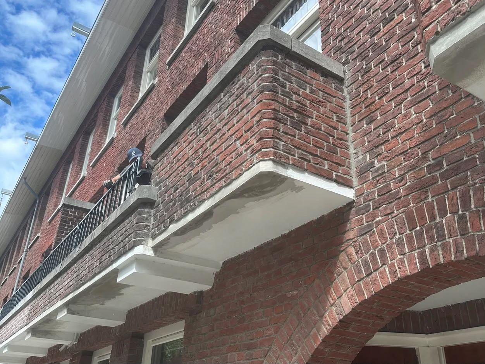
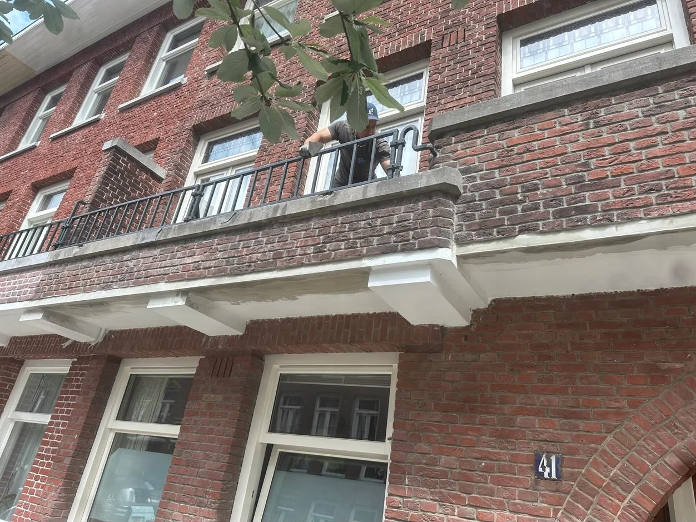
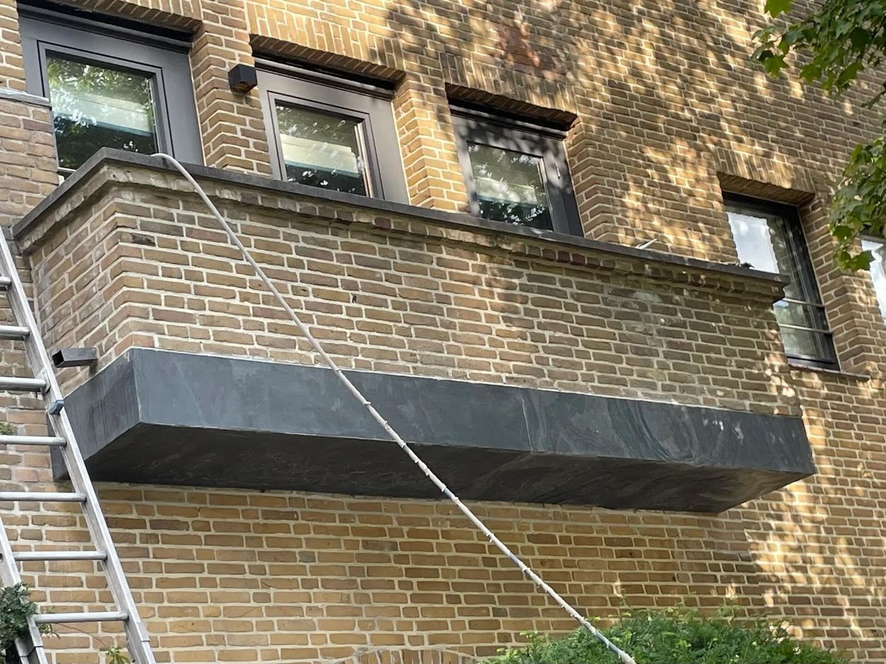
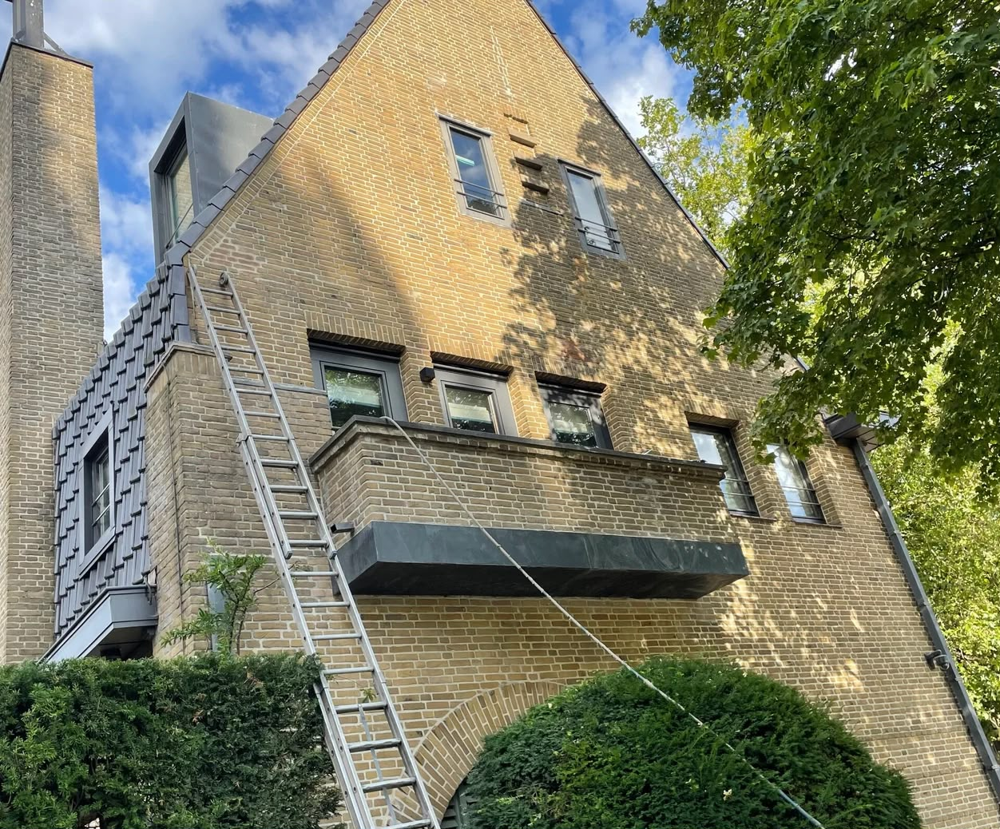
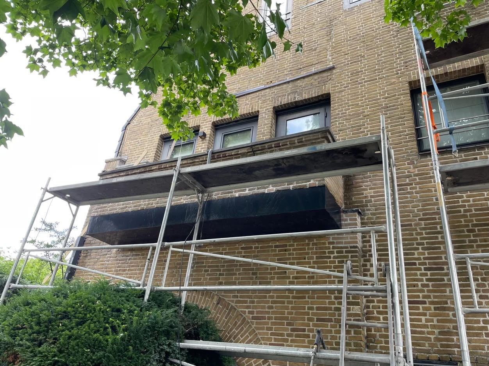

Veiligheid voorop. Wij herstellen balkondragers, betonrot en ondersteuningen met duurzame precisie.
Oude balkons kampen vaak met betonrot, roestende wapening of verzwakte ondersteuningen. Dit is niet alleen ontsierend, maar levensgevaarlijk. Wij zijn gespecialiseerd in de complete structurele en esthetische restauratie van balkons.
Herstelwerk in detail




